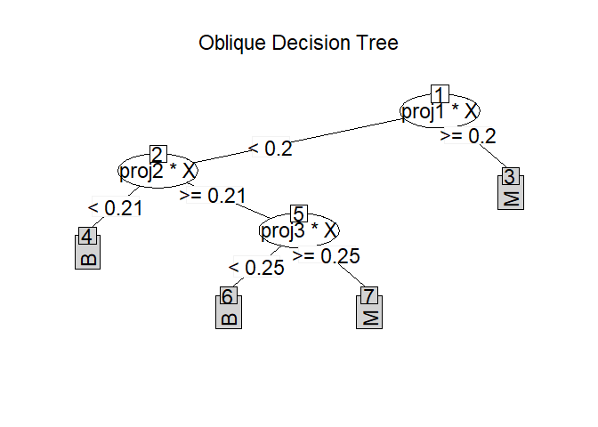

Oblique Decision Random Forest for Classification and Regression
Source:vignettes/Oblique-Decision-Random-Forest.Rmd
Oblique-Decision-Random-Forest.RmdODRF 


ODRF implements the well-known Oblique Decision Tree (ODT) and ODT-based Random Forest (ODRF), which uses linear combinations of predictors as partitioning variables for both traditional CART and Random Forest. A number of modifications have been adopted in the implementation; some new functions are also provided.
Overview
The ODRF R package consists of the following main functions:
-
ODT()classification and regression using an ODT in which each node is split by a linear combination of predictors. -
ODRF()classification and regression implemented by the ODRF It’s an extension of random forest based on ODT() and includes random forest as a special case. -
Online()online training to update existing ODT and ODRF by using new data sets. -
prune()prune ODT from bottom to top with validation data based on prediction error. -
print(), predict() and plot() the base R functions in the base R Package to class ODT and ODRF.
ODRF allows users to define their own functions to find
the projections at each node, which is essential to the performance of
the forests. We also provide a complete comparison and analysis for
other ODT and ODRF, more details are available in vignette(“ODRF”).
Installation
You can install the development version of ODRF from GitHub with:
# install.packages("devtools")
devtools::install_github("liuyu-star/ODRF")Usage
We show how to use the ODRF package with examples.
Classification and regression using ODT and ODRF
Examples of classification and regression using ODRF and ODT are as follows.
library(ODRF)
#> Loading required package: partykit
#> Loading required package: grid
#> Loading required package: libcoin
#> Loading required package: mvtnorm
data(seeds, package = "ODRF")
set.seed(12)
train <- sample(1:209, 150)
seeds_train <- data.frame(seeds[train, ])
seeds_test <- data.frame(seeds[-train, ])
forest <- ODRF(varieties_of_wheat ~ ., seeds_train, split = "gini",
parallel = FALSE)
pred <- predict(forest, seeds_test[, -8])
(e.forest <- mean(pred != seeds_test[, 8]))
#> [1] 0.01694915
data(body_fat, package = "ODRF")
train <- sample(1:252, 200)
bodyfat_train <- data.frame(body_fat[train, ])
bodyfat_test <- data.frame(body_fat[-train, ])
tree <- ODT(Density ~ ., bodyfat_train, split = 'mse')
pred <- predict(tree, bodyfat_test[, -1])
(e.tree <- mean((pred - bodyfat_test[, 1])^2))
#> [1] 4.047499e-05In the following example, suppose the training data are available in two batches. The first batch is used to train ODT and ODRF, and the second batch is used to update the model by online. The error after the model update is significantly smaller than that of one batch of data alone.
Update existing ODT and ODRF with online.
set.seed(17)
index <- sample(nrow(seeds_train), floor(nrow(seeds_train) / 2))
forest1 <- ODRF(varieties_of_wheat ~ ., seeds_train[index, ],
split = "gini", parallel = FALSE)
pred <- predict(forest1, seeds_test[, -8])
(e.forest.1 <- mean(pred != seeds_test[, 8]))
#> [1] 0.03389831
forest2 <- online(forest1, seeds_train[-index, -8], seeds_train[-index, 8])
pred <- predict(forest2, seeds_test[, -8])
(e.forest.online <- mean(pred != seeds_test[, 8]))
#> [1] 0.03389831
index <- seq(floor(nrow(bodyfat_train) / 2))
tree1 <- ODT(Density ~ ., bodyfat_train[index, ], split = 'mse')
pred <- predict(tree1, bodyfat_test[, -1])
(e.tree.1 <- mean((pred - bodyfat_test[, 1])^2))
#> [1] 4.428549e-05
tree2 <- online(tree1, bodyfat_train[-index, -1], bodyfat_train[-index, 1])
pred <- predict(tree2, bodyfat_test[, -1])
(e.tree.online <- mean((pred - bodyfat_test[, 1])^2))
#> [1] 4.418373e-05prune first judges whether the error of new data is reduced or not if applied, starting from the last leaf nodes. For ODRF, if argument ‘useOOB=TRUE’ then it uses ‘out-of-bag’ for pruning. Examples are as follows.
set.seed(4)
bodyfat_train=rbind(as.matrix(bodyfat_train),matrix(rnorm(3000*5),5*200,15))
seeds_train=rbind(as.matrix(seeds_train),matrix(rnorm(1200*5),5*150,8))
bodyfat_train[-seq(200),1]=sample(bodyfat_train[seq(200),1],5*200,
replace = TRUE)
seeds_train[-seq(150),8]=sample(seeds_train[seq(150),8],5*150,
replace = TRUE)
index <- sample(nrow(seeds_train), floor(nrow(seeds_train) / 2))
forest1 <- ODRF(seeds_train[index, -8], seeds_train[index, 8],
split = "gini", parallel = FALSE)
pred <- predict(forest1, seeds_test[, -8])
(e.forest.1 <- mean(pred != seeds_test[, 8]))
#> [1] 0.06779661
forest2 <- prune(forest1, seeds_train[-index, -8], seeds_train[-index, 8],
useOOB = FALSE)
pred <- predict(forest2, seeds_test[, -8])
(e.forest.prune1 <- mean(pred != seeds_test[, 8]))
#> [1] 0.05084746
forest3 <- prune(forest1, seeds_train[index, -8], seeds_train[index, 8])
pred <- predict(forest3, seeds_test[, -8])
(e.forest.prune2 <- mean(pred != seeds_test[, 8]))
#> [1] 0.06779661
index <- sample(nrow(bodyfat_train), floor(nrow(bodyfat_train) / 2))
tree1 <- ODT(bodyfat_train[index, -1], bodyfat_train[index, 1], split = 'mse')
pred <- predict(tree1, bodyfat_test[, -1])
(e.tree.1 <- mean((pred - bodyfat_test[, 1])^2))
#> [1] 8.18606e-05
tree2 <- prune(tree1, bodyfat_train[-index, -1], bodyfat_train[-index, 1])
pred <- predict(tree2, bodyfat_test[, -1])
(e.tree.prune <- mean((pred - bodyfat_test[, 1])^2))
#> [1] 7.581808e-05Note that, prune does not always improve efficiency because the number of observers in the training set is too small to build a simple tree structure. Therefore, we expand the training set with random numbers to make prune effective.
print the tree structure of ODT and ODRF
data(iris, package = "datasets")
tree <- ODT(Species ~ ., data = iris)
#> Warning in ODT_compute(formula, Call, varName, X, y, Xsplit, split, lambda, :
#> You are creating a tree for classification
print(tree)
#>
#> =============================================================
#> Oblique Classification Tree structure
#> =============================================================
#>
#> 1) root
#> node2)# proj1*X < 0.21 -> (leaf1 = setosa)
#> node3) proj1*X >= 0.21
#> node4)# proj2*X < 0.88 -> (leaf2 = versicolor)
#> node5)# proj2*X >= 0.88 -> (leaf3 = virginica)
party.tree <- as.party(tree, data = iris)
print(party.tree)
#>
#> Model formula:
#> Species ~ Sepal.Length + Sepal.Width + Petal.Length + Petal.Width
#>
#> Fitted party:
#> [1] root
#> | [2] proj1*X >= 0.20707
#> | | [3] proj2*X >= 0.88392: virginica (n = 53, err = 5.7%)
#> | | [4] proj2*X < 0.88392: versicolor (n = 47, err = 0.0%)
#> | [5] proj1*X < 0.20707: setosa (n = 50, err = 0.0%)
#>
#> Number of inner nodes: 2
#> Number of terminal nodes: 3
forest <- ODRF(Species ~ ., data = iris, parallel = FALSE)
#> Warning in ODRF_compute(formula, Call, varName, X, y, split, lambda,
#> NodeRotateFun, : You are creating a forest for classification
print(forest)
#>
#> Call:
#> ODRF.formula(formula = Species ~ ., data = data, parallel = FALSE)
#> Type of oblique decision random forest: classification
#> Number of trees: 100
#> OOB estimate of error rate: 4%
#> Confusion matrix:
#> setosa versicolor virginica class_error
#> setosa 50 0 0 0.00000000
#> versicolor 0 47 3 0.05999988
#> virginica 0 3 47 0.05999988Plot the tree structure of ODT
plot(tree)Getting help
If you encounter a clear bug, please file an issue with a minimal reproducible example on GitHub.
Please note that this project is released with a Contributor Code of Conduct. By participating in this project you agree to abide by its terms.